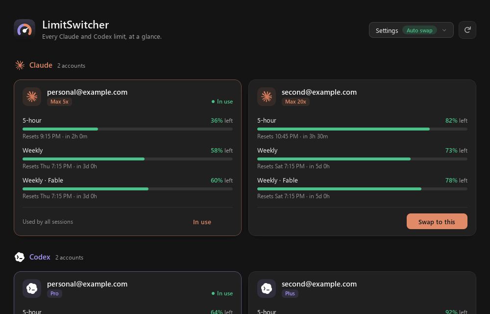
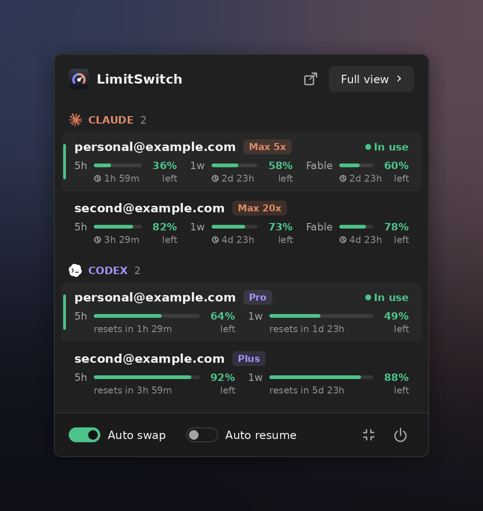
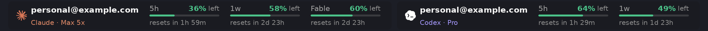

LimitSwitch shows every Claude Code and Codex limit at a glance, switches accounts in one click, and switches by itself when the one you're using runs out.
Free and open source · Windows 10 and 11 · macOS

5-hour, weekly and per-model limits for every Claude and ChatGPT account you use, with when each resets.
Claude Code and Codex, every account side by side: what's left, and when it resets.
Click an account and every session moves to it, including ones already open. Nothing restarts.
When an account runs out, the next one with room takes over and your thread carries on.
A Claude Code session that stops on a limit picks up again by itself, even when nobody's at the keyboard.
Keep the accounts in use on the Windows taskbar or in the tray panel. They step aside for full-screen apps.
A native app that sleeps until something changes. Logins stay encrypted on your computer; checking usage costs no quota.
Click the icon for a compact panel with every account. Click one to switch.


Your accounts are picked up automatically from Claude Code and Codex. Add more with the official sign-in, right from the app.
Windows 10 or 11. No admin rights needed.
LimitSwitch-Setup.exe.It lives in the menu bar. There's no installer for Mac yet, so it installs from source.
git clone https://github.com/doge006/Account-Switcher.gitbash Install.command in that folder.Updates: the app checks for new versions when it starts and updates itself from Settings.
No. It reads the same read-only status endpoints that Claude Code's /usage and ChatGPT's usage page use. It checks the account in use every few minutes and the others less often.
On your computer only, encrypted with Windows DPAPI or the macOS Keychain. Nothing is sent anywhere except to Anthropic's and OpenAI's own endpoints.
Yes. Claude Code picks up the new login on its next request. Codex's requests go through LimitSwitch while it runs, so an open session moves on its next request too.
Only while it runs: a hook for Auto resume and a local router for Codex. Both are removed when you quit or uninstall.
Check Anthropic's and OpenAI's terms for your plans. That's your call.